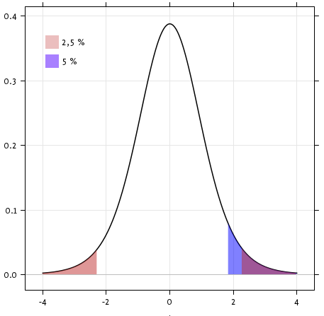
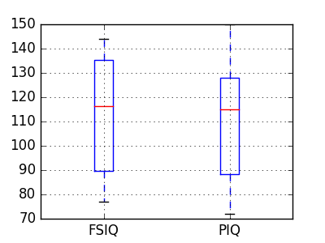
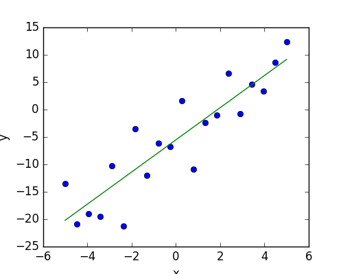
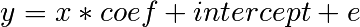
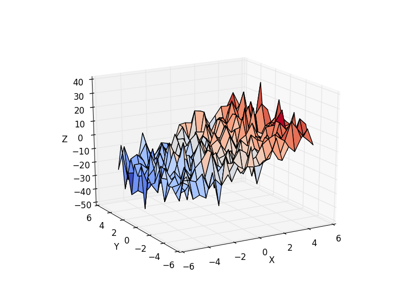
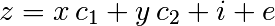
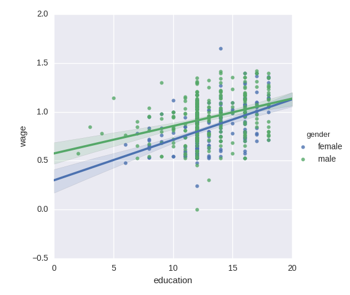

3.1. 在Python中进行统计分析¶
Author: Gaël Varoquaux
Requirements
- 标准Python科学计算环境 (numpy, scipy, matplotlib)
- Pandas
- Statsmodels
- Seaborn
为了安装Python和它的依赖项, 我们推荐你安 装 Anaconda Python 或者 Enthought Canopy, 或者直接使用包管理器 在 Ubuntu 或其他 linux 系统下工作.
小技巧
为什么使用Python进行统计分析?
R是一个专门用于统计分析的编程语言。Python则是一个通用编程语言，以 统计相关的模块的方式进行统计分析。R比Python有更多的统计功能，以及对 统计更亲切的语法。无论如何，当建立更复杂的工作流，如与图像分析，文本 挖掘或者物理实验控制集成时，Python的通用性与相关模块就成了无价的财富。
目录
小技巧
在这个文档中, Python 输入前面有符号”>>>”来标识.
敏感回避: 性别问题
这个教程中的一些例子与性别问题有关。讨论它们是因为在这类问题中的信度 的保证是十分重要的。
3.1.1. 数据表示与交互方式¶
3.1.1.1. 作为表的数据¶
统计分析中的处理对象为一些 观测 或 样本 ，其中每个又以
一些 属性 或 特征 所描述。数据可以看成2维表格或矩阵，它们的列
记录的是数据中不同的属性，而每行则则对应着观测。像这个数据
examples/brain_size.csv:
"";"Gender";"FSIQ";"VIQ";"PIQ";"Weight";"Height";"MRI_Count"
"1";"Female";133;132;124;"118";"64.5";816932
"2";"Male";140;150;124;".";"72.5";1001121
"3";"Male";139;123;150;"143";"73.3";1038437
"4";"Male";133;129;128;"172";"68.8";965353
"5";"Female";137;132;134;"147";"65.0";951545
3.1.1.2. pandas 的 data-frame¶
小技巧
我们将使用
:class:`pandas.DataFrame`来操作该数据，它是 `pandas
<http://pandas.pydata.org>`_ 模块的一个类. 这是Python中（Excel那种）电子表格
的等价物。它与二维 numpy 数组不同，正如其名字所示，它可以包含在各列中
分别保存不同类型的数据，并且提供了精致强大的索引和数据操纵机制。
3.1.1.2.1. 创建 dataframe: 从文件读取或从数组转换¶
从CSV文件中载入: 我们将使用上面的CSV文件，该文件给出了一些观测的脑容量，重量与 IQ (Willerman et al. 1991)，这个数据由一些数值型变量与分类变量混合而成:
>>> import pandas
>>> data = pandas.read_csv('examples/brain_size.csv', sep=';', na_values=".")
>>> data
Unnamed: 0 Gender FSIQ VIQ PIQ Weight Height MRI_Count
0 1 Female 133 132 124 118 64.5 816932
1 2 Male 140 150 124 NaN 72.5 1001121
2 3 Male 139 123 150 143 73.3 1038437
3 4 Male 133 129 128 172 68.8 965353
4 5 Female 137 132 134 147 65.0 951545
...
警告
缺失值
从上面预览中可以看到第二个个体的重量在CSV文件中缺失了。如果我不指派 缺失值（NA = not available）的对应标签，我们将不能继续进行统计分析。
从数组中创建: 类 pandas.DataFrame 可以看成是1维的 ‘series’
对象（如 arrays 或 lists 等）的字典。 譬如，我们有三个 numpy arrays:
>>> import numpy as np
>>> t = np.linspace(-6, 6, 20)
>>> sin_t = np.sin(t)
>>> cos_t = np.cos(t)
我们可以把它们装进一个 pandas.DataFrame:
>>> pandas.DataFrame({'t': t, 'sin': sin_t, 'cos': cos_t})
cos sin t
0 0.960170 0.279415 -6.000000
1 0.609977 0.792419 -5.368421
2 0.024451 0.999701 -4.736842
3 -0.570509 0.821291 -4.105263
4 -0.945363 0.326021 -3.473684
5 -0.955488 -0.295030 -2.842105
6 -0.596979 -0.802257 -2.210526
7 -0.008151 -0.999967 -1.578947
8 0.583822 -0.811882 -0.947368
...
其他输入方式: pandas 可以从 SQL, excel 文件, 或其他格式这种导入数据. 参见 pandas文档.
3.1.1.2.2. 操纵数据¶
data 是一个 pandas.DataFrame 对象, 它与 R的 dataframe 对象很类似:
>>> data.shape # 40 rows and 8 columns
(40, 8)
>>> data.columns # It has columns
Index([u'Unnamed: 0', u'Gender', u'FSIQ', u'VIQ', u'PIQ', u'Weight', u'Height', u'MRI_Count'], dtype='object')
>>> print(data['Gender']) # Columns can be addressed by name
0 Female
1 Male
2 Male
3 Male
4 Female
...
>>> # Simpler selector
>>> data[data['Gender'] == 'Female']['VIQ'].mean()
109.45
注解
为了快速得到dataframe数据的大致状况, 使用它的 describe
方法: pandas.DataFrame.describe().
groupby: 以分类变量的值分隔数据:
>>> groupby_gender = data.groupby('Gender')
>>> for gender, value in groupby_gender['VIQ']:
... print((gender, value.mean()))
('Female', 109.45)
('Male', 115.25)
groupby_gender 是一个有着很多强大汇总函数方法的对象，可以分别加在各分组上:
>>> groupby_gender.mean()
Unnamed: 0 FSIQ VIQ PIQ Weight Height MRI_Count
Gender
Female 19.65 111.9 109.45 110.45 137.200000 65.765000 862654.6
Male 21.35 115.0 115.25 111.60 166.444444 71.431579 954855.4
小技巧
对`groupby_gender`对象使用tab自动补全来找到类似这样的函数。其中常用的 有median, count（对于检查不同子集中的缺失值数量有用）或sum。这里分组操作 是惰性求值的，在实际调用任何汇总函数之前并不引发任何复制或运算。
练习
全部样本的VIQ均值是多少？
在这个研究中有多少男性/女性被包含在内？
提示 使用 ‘tab自动补全’ 来找到可以调用的方法，替换上面调用的’mean’的地位 达到效果。
log变换后的MRI count指标在男性与女性中的平均值各为多少?
注解
groupby_gender.boxplot 可以用于以图形形式回答这个问题 (see this example).
3.1.1.2.3. 数据可视化¶
Pandas 有一些绘图方法 (pandas.tools.plotting, 这里基于matplotlib) 显示
dataframe中的统计量。
散点矩阵:
>>> from pandas.tools import plotting
>>> plotting.scatter_matrix(data[['Weight', 'Height', 'MRI_Count']])
>>> plotting.scatter_matrix(data[['PIQ', 'VIQ', 'FSIQ']])

练习
分别绘制只包含男性与女性的散点矩阵。你认为这两个子总体符合性别情况吗？
3.1.2. 假设检验: 比较两组情况¶
对于简单的 假设检验, 我们将
使用 scipy 模块的 scipy.stats 子模块:
>>> from scipy import stats
参见
Scipy is a vast library. For a quick summary to the whole library, see the scipy chapter. Scipy是一个庞大的库。若想获得该库的一个概览， 参见 scipy 章节。
3.1.2.1. t检验:最简单的统计检验¶
3.1.2.1.1. 单样本那t检验: 检验总体均值¶
{kind=link}
scipy.stats.ttest_1samp() 检验给定值是否可能是数据的均值（严格的说，是
检验是否数据是从符合给定值为期望的正态分布中抽取出来的。）。它返回
所谓的 T统计量,
与 p值 （参见函数文档）。
>>> stats.ttest_1samp(data['VIQ'], 0)
(...30.088099970..., 1.32891964...e-28)
小技巧
由于p值为 10^-28，我们可以断言IQ（以VIQ度量）均值不为0.
3.1.2.1.2. 双样本t检验: 检验两个样本之间的差异¶
我们之前已经看到男性与女性的VIQ均值是不一样的，为了检验这个差异是否显著，
我们进行双样本t检验，可以调用函数 scipy.stats.ttest_ind():
>>> female_viq = data[data['Gender'] == 'Female']['VIQ']
>>> male_viq = data[data['Gender'] == 'Male']['VIQ']
>>> stats.ttest_ind(female_viq, male_viq)
(...-0.77261617232..., 0.4445287677858...)
3.1.2.2. 配对检验: 同一个体上重复观测¶
PIQ, VIQ 与 FSIQ 给出了IQ的三种测量方式。让我们检验是否FISQ与PIQ是有显著差异 的。我们可以使用双样本t检验:
>>> stats.ttest_ind(data['FSIQ'], data['PIQ'])
(...0.46563759638..., 0.64277250...)
这个方法的问题在于它丢弃了每个FSIQ，PIQ对是通过对相同个体进行测量得到的这一信息。 所以就高估了统计量的标准差，使得检验更难被拒绝，这一步可以使用”配对检验”或”重复观测检验” 得到矫正 <https://en.wikipedia.org/wiki/Repeated_measures_design>`_:
>>> stats.ttest_rel(data['FSIQ'], data['PIQ'])
(...1.784201940..., 0.082172638183...)
这与两者差分的0均值单样本t检验等价:
>>> stats.ttest_1samp(data['FSIQ'] - data['PIQ'], 0)
(...1.784201940..., 0.082172638...)
T-检验假定了数据服从正态分布，我们可以使用 `Wilcoxon符号秩检验 <https://en.wikipedia.org/wiki/Wilcoxon_signed-rank_test>`_来放松这个假设。
>>> stats.wilcoxon(data['FSIQ'], data['PIQ'])
(274.5, 0.106594927...)
注解
类似的非配对非参数检验方法是 Mann-Whitney U 检
验,
scipy.stats.mannwhitneyu().
练习
- 检验男性与女性间重量的差异
- 使用非参数统计量检验VIQ在男性与女性间的差异。
总结: 我们发现数据并不支持男性与女性在VIQ间有差别的假设。
3.1.3. 线性模型，多因子与方差分析¶
3.1.3.1. 通过公式对象在Python中构建统计模型¶
3.1.3.1.1. 简单线性回归的例子¶
给定观测的两个维度,`x`与`y`，我们想要检验`y`是否是`x`的一个线性函数的假设。 换句话说:

其中 e 是噪声项。我们将使用 statmodels 模块来:
- 拟合一个线性模型，我们将使用最简单的方法, 最小二乘 法 (OLS).
- 检验 coef 是非0向量的假设.
首先，我们为模型生成一些模拟数据:
>>> import numpy as np
>>> x = np.linspace(-5, 5, 20)
>>> np.random.seed(1)
>>> # normal distributed noise
>>> y = -5 + 3*x + 4 * np.random.normal(size=x.shape)
>>> # Create a data frame containing all the relevant variables
>>> data = pandas.DataFrame({'x': x, 'y': y})
接着我们指定一个OLS模型，然后拟合它:
>>> from statsmodels.formula.api import ols
>>> model = ols("y ~ x", data).fit()
我们可以查看从拟合中得到的各个统计量:
>>> print(model.summary())
OLS Regression Results
==========================...
Dep. Variable: y R-squared: 0.804
Model: OLS Adj. R-squared: 0.794
Method: Least Squares F-statistic: 74.03
Date: ... Prob (F-statistic): 8.56e-08
Time: ... Log-Likelihood: -57.988
No. Observations: 20 AIC: 120.0
Df Residuals: 18 BIC: 122.0
Df Model: 1
==========================...
coef std err t P>|t| [95.0% Conf. Int.]
------------------------------------------...
Intercept -5.5335 1.036 -5.342 0.000 -7.710 -3.357
x 2.9369 0.341 8.604 0.000 2.220 3.654
==========================...
Omnibus: 0.100 Durbin-Watson: 2.956
Prob(Omnibus): 0.951 Jarque-Bera (JB): 0.322
Skew: -0.058 Prob(JB): 0.851
Kurtosis: 2.390 Cond. No. 3.03
==========================...
术语:
Statsmodel 使用一些统计术语，比如`y`变量在statsmodel里被称为`endogenous` 而`x`变量则被称为exogenous。更多细节参见 这里.
作为简化, `y`(endogenous) 可以看成你打算预测的值，而`x`(exogenous)则表示 你打算用来进行预测时凭借的变量。
练习
用变量保存上面模型估计中所展示的参数。提示: 使用tab补全找到相关属性。
3.1.3.1.2. 分类变量: 比较分组或多个分类情况¶
让我们回到大脑大小的例子中:
>>> data = pandas.read_csv('examples/brain_size.csv', sep=';', na_values=".")
我们可以做一个线性模型来比较男性与女性的IQ差别:
>>> model = ols("VIQ ~ Gender + 1", data).fit()
>>> print(model.summary())
OLS Regression Results
==========================...
Dep. Variable: VIQ R-squared: 0.015
Model: OLS Adj. R-squared: -0.010
Method: Least Squares F-statistic: 0.5969
Date: ... Prob (F-statistic): 0.445
Time: ... Log-Likelihood: -182.42
No. Observations: 40 AIC: 368.8
Df Residuals: 38 BIC: 372.2
Df Model: 1
==========================...
coef std err t P>|t| [95.0% Conf. Int.]
-----------------------------------------------------------------------...
Intercept 109.4500 5.308 20.619 0.000 98.704 120.196
Gender[T.Male] 5.8000 7.507 0.773 0.445 -9.397 20.997
==========================...
Omnibus: 26.188 Durbin-Watson: 1.709
Prob(Omnibus): 0.000 Jarque-Bera (JB): 3.703
Skew: 0.010 Prob(JB): 0.157
Kurtosis: 1.510 Cond. No. 2.62
==========================...
构建模型的技巧
强制分类变量化: ‘Gender’ 被自动发现是一个分类变量，然后它的每个 取值被处理成不同的实体。
一个只有整数的数据列可以以这样的方式被强制解释为分类变量:
>>> model = ols('VIQ ~ C(Gender)', data).fit()
截距: 我们可以利用在公式中使用 - 1 来删除模型中的截距, 也可以使用 + 1 来强制使用截距.
小技巧
默认情况下,statsmodel 将K个取值（或称为”水平”）的分类变量以 K-1个 虚拟变量编码（最后一个水平被吸进截距项中）。作为默认项这个处理方法不坏， 但也可以指定其他的分类变量编码方法，见 (http://statsmodels.sourceforge.net/devel/contrasts.html).
与FSIQ与PIQ的t检验的联系
为了比较不同类型的IQ，我们需要创建一个 “长式表”(“long-form” talbe) ，其中不同种类的IQ被放入同一列中，其类型被同行的另一个分类变量编码:
>>> data_fisq = pandas.DataFrame({'iq': data['FSIQ'], 'type': 'fsiq'})
>>> data_piq = pandas.DataFrame({'iq': data['PIQ'], 'type': 'piq'})
>>> data_long = pandas.concat((data_fisq, data_piq))
>>> print(data_long)
iq type
0 133 fsiq
1 140 fsiq
2 139 fsiq
...
31 137 piq
32 110 piq
33 86 piq
...
>>> model = ols("iq ~ type", data_long).fit()
>>> print(model.summary())
OLS Regression Results
...
==========================...
coef std err t P>|t| [95.0% Conf. Int.]
------------------------------------------...
Intercept 113.4500 3.683 30.807 0.000 106.119 120.781
type[T.piq] -2.4250 5.208 -0.466 0.643 -12.793 7.943
...
我们可以发现这与上面对应比较IQ的t检验取得了相同的统计量值与p值:
>>> stats.ttest_ind(data['FSIQ'], data['PIQ'])
(...0.46563759638..., 0.64277250...)
3.1.3.2. 多元线性回归¶
考虑一个解释因变量`z`的线性模型，它有两个自变量`x`与`y`:

这样一个模型可以在3D空间中被可视化为一个平面嵌入到(x,`y`,`z`)构成的散点云中。
实例: iris数据集 (examples/iris.csv)
小技巧
sepal(萼片)与petal(花瓣)大小看上去是相关的: 其中一者较大时另一者也较大！ 但是在各族间存在进一步的系统差异吗？
>>> data = pandas.read_csv('examples/iris.csv')
>>> model = ols('sepal_width ~ name + petal_length', data).fit()
>>> print(model.summary())
OLS Regression Results
==========================...
Dep. Variable: sepal_width R-squared: 0.478
Model: OLS Adj. R-squared: 0.468
Method: Least Squares F-statistic: 44.63
Date: ... Prob (F-statistic): 1.58e-20
Time: ... Log-Likelihood: -38.185
No. Observations: 150 AIC: 84.37
Df Residuals: 146 BIC: 96.41
Df Model: 3
==========================...
coef std err t P>|t| [95.0% Conf. Int.]
------------------------------------------...
Intercept 2.9813 0.099 29.989 0.000 2.785 3.178
name[T.versicolor] -1.4821 0.181 -8.190 0.000 -1.840 -1.124
name[T.virginica] -1.6635 0.256 -6.502 0.000 -2.169 -1.158
petal_length 0.2983 0.061 4.920 0.000 0.178 0.418
==========================...
Omnibus: 2.868 Durbin-Watson: 1.753
Prob(Omnibus): 0.238 Jarque-Bera (JB): 2.885
Skew: -0.082 Prob(JB): 0.236
Kurtosis: 3.659 Cond. No. 54.0
==========================...
3.1.3.3. 因果假设检验: 方差分析(ANOVA)¶
在上面的iris例子中，我们希望检验是否petal长度在versicolor与virginica类中有差异， 在控制了sepal宽度的效应后。这可以公式化为检验模型中versicolor与virginica的系数 是否存在差别。（这是所谓的方差分析 ANOVA). 为了做到这一点，我们 比照被估计的参数额顺序写了一个 比较向量，我们想要以 F检验 检验假设``”name[T.versicolor] - name[T.virginica]”``:
>>> print(model.f_test([0, 1, -1, 0]))
<F test: F=array([[ 3.24533535]]), p=[[ 0.07369059]], df_denom=146, df_num=1>
所以是否有显著差异呢? |
练习
回到IQ数据上来，检验是否男性/女性的VIQ在控制了脑大小,高度与重量后 会有差异。
3.1.4. 更强大的可视化: 使用seaborn进行探索式分析¶
Seaborn 在pandas dataframe 上组合了简单的统计量拟合与绘图。
让我们考虑一个给定了工资与其他个人信息的数据，其由500个个体组成。 (Berndt, ER. The Practice of Econometrics. 1991. NY: Addison-Wesley).
小技巧
包括载入数据与绘图的完整代码参见 corresponding example.
>>> print data
EDUCATION SOUTH SEX EXPERIENCE UNION WAGE AGE RACE \
0 8 0 1 21 0 0.707570 35 2
1 9 0 1 42 0 0.694605 57 3
2 12 0 0 1 0 0.824126 19 3
3 12 0 0 4 0 0.602060 22 3
...
3.1.4.1. 点对绘图: 散点矩阵¶
我们可以使用 seaborn.pairplot() 画出一个散点矩阵来获取各个连续变量
之间的关系。
>>> import seaborn
>>> seaborn.pairplot(data, vars=['WAGE', 'AGE', 'EDUCATION'],
... kind='reg')
分类变量可以这样绘制
>>> seaborn.pairplot(data, vars=['WAGE', 'AGE', 'EDUCATION'],
... kind='reg', hue='SEX')
关于matplotlib的设定
Seaborn 改变了matplotlib图像的默认设定产生更”现代”，”像excel”的图像外观。 它在导入时就这么做了，你可以重置为默认设定通过:
>>> from matplotlib import pyplot as plt
>>> plt.rcdefaults()
小技巧
为了又切回seaborn的设定，或者了解更多关于seaborn的样式设定， 见 seaborn文档的相关章节.
3.1.4.2. lmplot: 绘制单变量回归图¶
回归捕捉了两个变量之间的联系，如工资与教育水平之间，可以使用 seaborn.lmplot()
显示出两者联系:
>>> seaborn.lmplot(y='WAGE', x='EDUCATION', data=data)

Robust regression
小技巧
从上面的图像中可以看到似乎有一些点偏离了散点云而较偏右，它们也许是离群点， 对总体不具有代表性，但却主导了回归。
为了进行对离群点不那么敏感的回归，必须使用 robust model. 这在seaborn中
通过在上面那个函数中指定 robust=True 实现。或者在statsmodels中将OLS
换为”Robust Linear Model” statsmodels.formula.api.rlm().
3.1.5. 检验交互项¶
是否男性的工资增长对教育更敏感？
小技巧
<http://statsmodels.sourceforge.net/devel/example_formulas.html#multiplicative-interactions>`_. 上面的图片是以两个不同的拟合生成的，但我们想要把斜率变化放在一个公式里表达， 这可以通过向模型中添加交互项解决。
>>> result = sm.ols(formula='wage ~ education + gender + education * gender',
... data=data).fit()
>>> print(result.summary())
...
coef std err t P>|t| [95.0% Conf. Int.]
------------------------------------------------------------------------------
Intercept 0.2998 0.072 4.173 0.000 0.159 0.441
gender[T.male] 0.2750 0.093 2.972 0.003 0.093 0.457
education 0.0415 0.005 7.647 0.000 0.031 0.052
education:gender[T.male] -0.0134 0.007 -1.919 0.056 -0.027 0.000
==========================...
...
我们可以得出在教育中男性比女性受益更多的结论吗？
一些有用的信息
- 假设检验的p值告诉你效应/差异的**显著性**。
- 带分类变量的公式让你可以表达数据中复杂的联系。
- 可视化你的数据与简单模型很有用！
- 寻找有意义的自变量是建模中重要的一步，它影响最后的解释。